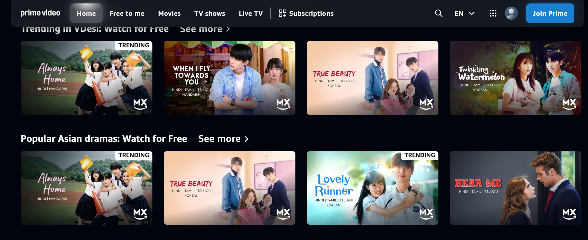

5
01
HTML
Semantic structure, forms, and accessible page layouts.
WEB DEVELOPER IN PROGRESS
I'm learning web development by building real projects, breaking things, fixing them, and getting a little better with every attempt.
I'm Sami, working towards becoming a full-stack developer. I started with frontend fundamentals and now use small projects to turn concepts into something I can actually run.
I don't want to just recognise code in a tutorial. I want to understand why it works, debug it when it doesn't, and eventually build things independently.
My current focus is HTML, CSS, Tailwind CSS, and improving my JavaScript through practice.
Current focus
Frontend development and practical projects
Long-term goal
Become a confident full-stack developer
How I learn
Build, test, debug, and improve
SKILLS
Technologies I'm learning and practising while working towards building complete web applications.
Semantic structure, forms, and accessible page layouts.
Responsive layouts, Flexbox, Grid, and visual styling.
Practising functions, arrays, objects, DOM, and APIs.
Utility classes, responsive styling, and layout composition.
Practising version control and organising project changes.
PROJECTS
A collection of projects and experiments. I'll add more as I finish them and have something useful to show.

A streaming platform interface project inspired by Amazon Prime Video.
PERSONAL PROJECT
Beautiful flowers for beautiful moments
Discover handcrafted bouquets and thoughtful gifts created for birthdays, anniversaries, weddings and every special moment in between.
Fresh flowers. Beautiful arrangements. Moments worth remembering.
A flower shop website project focused on presenting bouquets and floral gifts.
PERSONAL PROJECT
I'm focused on building projects, improving my skills, and connecting with people interested in technology.